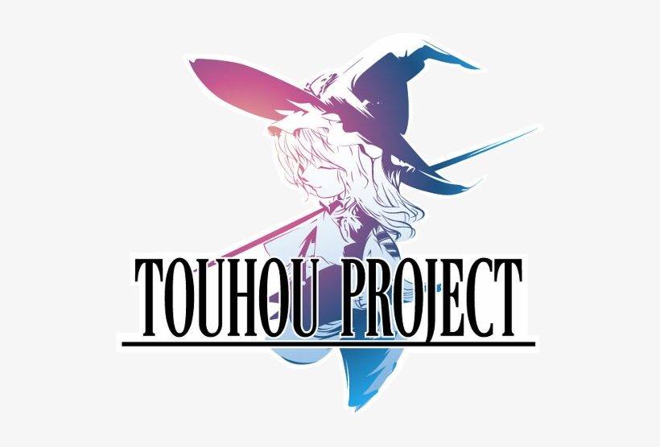
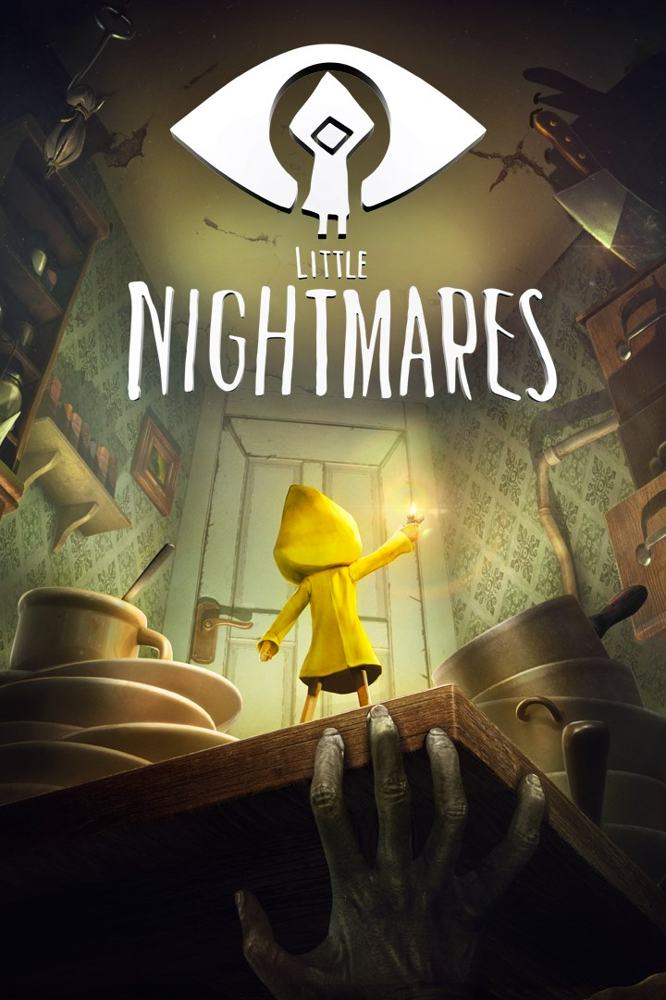
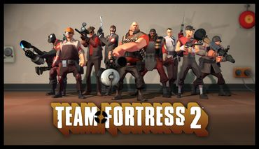
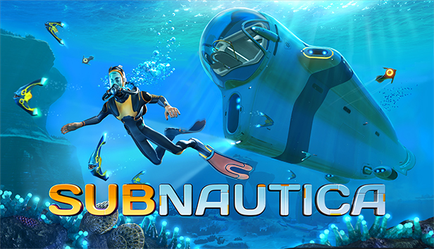

About me
My name is Christophre Benson, I'm 18, and I study Computer Science at Vanier College.
Hobbies
Music
My hobbies are listening to music mainly electronic
the genres I listen to are varied, but my favorites are the one's that are not that common such as :
- J-core: Japanese hardcore
- Eurobeat : european pop I think (It's known as drift music because of Initial D)
- Complextro : complex electronic music
- Funkot : dance music from Jakarta, Indonesia
- Full Flavor
- Touhou : from the 東方Project
- Speedcore : the fastest genre of electronic music, to be speedcore, the BPM must be atleast 300, sometimes the song's BPM goes in the thousands in that case its called Extratone. (Extratone : a subgenre of speedcore)
But some My favorite artists are :
Sports
I like sports, I've preacticed multiple such as :
- Archery, because we had archery in secondary during gym class and I realized that I had a natural talent in it, so I continued by taling courses until last year.
- Swimming, because I liked the water
- Soccer, because I liked running arround and the sport seemed interesting
- Spear Throwing, this is a sport that the school (Saint-Maxime) did near the end of the school year that I really enjoyed.
Video Games
another hobby of mine is playing video games and my favorite genres are:
- Bullet Hell : survive as long as you can while enemies spray bullets from pretty much every angle, as annoying as dying over and over to the same level, the feeling I get finally memorizing the bosse's patterns and betting them is very satisfiying.
- Stealth : sneak around, I like to feel
- Strategy : strategise to win. this one I like because I don't just press the same button to win and it involves a lot of thinking outside the box.
- Survival : survive as long as possible in various situations
- Horror : I like the suspense, not knowing what lies around the corner. But I also like psychological horror, because they mess with you and scare you without the need of jumpscares.
- Meta: games that are self aware, I like this one because its amazing seeing how much can be done with a program, I like seeing files get created/deleted/modified affecting the story and the game as I play. Or when the character is aware that they aren't real and talk to you (the player) and not your avatar.
- rhythm: mach the key at the right time following the beat of a song, I like this genre because I like to see how good I am at coordinating my eye, ears and hands.
Some of the games I like to play are:
- 東方 project : a japanese shmup/danmaku doujinshi(because the searies is made by one guy named zun) game, featuring characters from eastern mythology, urban legends and stories, such as the lengend of the bamboo cutter, the girl from the gap, Chang'e, unfortunately since the game is aimed at a japanese demographic it is not well known here in the west. But I really like the music as I mentioned earlier, I also like the characters and the story. The games offer a great challenge especially in Lunatic mode.

- Little Nightmares : a game where you play a a kid in a distorted world were the adults try to catch and either eat you or kill you, the game is suspenseful and really good.

- Garry's mod(Gmod) : A sandbox game, an old game but still very fun to play with friends
- TF2 (team fortess 2) : A FPS red vs blue game where you get to play as a mercenary, there are multiple gamemodes. another old one but the game is still as active if not more than ever, there's even a story.

- Subnautica : its a horror, suvival game where you get stranded on an alien planet, mostly covered in water and you must survive and try to find a way to escape the planet, I really really like this game because the aquatic creatures in the game vary from cute to disturbing to very terrifiying, and the vibe you get from swimming around knowing you are alone on an alien planet not knowing what creature to expect is thrilling and scary.

- Minecraft : a creative sanbox game. I like how much freedom the game gives you.

Reading
I also read on my free time, I like to read :
- SCP articles: an article created by talent storywriters, scp means secure, contain, protect, they are an organization dedicated to secure contain and protect anamolies, keeping them secret from the world, each entry focuses on individual scps, what if senarios or stories. The scp universe is heavily inspired by the lovecraftian creatures.
- 東方 project manga : as they hold additional stories following the charaters
- manga : they're like commic books but japanese and you read them backwards, I like them, they have good stories
Drawing
watching
I like watching anime and some of my favorite genres are:
- Slice of life : as they are very calming, they have nice visual lanscapes and wholesome stories
- action : as they have good music, suspense, animation
- fantasy : as its amazing to see how we can create entire worlds with our imagination
- Isekai: meaning another world, its fun to see someone come from another world and interract with people who live complete different lives from him
- dark fantasy: I also like it when they take fantasy but push it in ways you wouldn't think was normal
Studies
Languages
I like to learn new languages as they hep me pass the time and talking to people from other places is fun
Spanish
I had classes in my last year of high school, then I had additional classes next summer at YMCA
Russian
self thaught until beginner level but then stopped practicing for a while
Japanese
self thought but I'm still a beginner
korean
Just like the others I'm self thaught
Other
Cooking
I have started ooking from a very young age, since I was 5 I think. since then I have mastered multiple dishes my specialty is now asian cuisine. I have leaned to cook :
- at Academie culinaire
- in community activities
- at home
- on my own
Art
I like to draw
Additional Information
Traveling
I like to travel, I have been to a few places like:
- Prince Edward Island
- Sweden
- Iceland
- Spain
- Florida
- Italy
- New York
- The Bahamas
- Danmark
- France
- Brittain
- Belgium
- Pensylvania
- New Orleans
- and a few other places